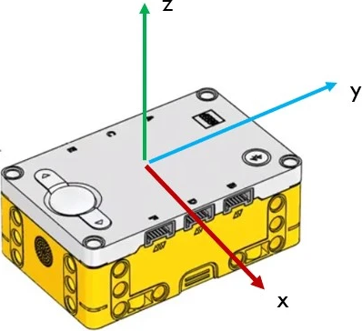

Hub Inputs#
Pybrick Documentation
To explore all Pybricks’ features check the Pybricks documentaion. This can also be seen in the right-hand panel of the Pybricks IDE.
The Prime Hub has two features that can provide input to the robot
buttons
inertial measurement unit (IMU)
Buttons#
The Prime Hub has four buttons, as shown below.

IMU#
The IMU is a sensor that can detect how the robot is moving. The sensor is configured around the x-axis, y-axis and z-axis as indicated in the image below.

Rotation along each axis has a specific name:
Roll is rotation along the x-axis
Pitch is rotation along the y-axis
Yaw is rotation along the z-axis, but it is not yet implemented.
IMU Orientation Functions#
Pybricks offers two functions that informs the hub’s orientation:
imu.up()→ Side→ Checks which side of the hub currently faces upward.side values are:
Side.TOP
Side.BOTTOM
Side.LEFT
Side.RIGHT
Side.FRONT
Side.BACK.
imu.tilt()→ Tuple[int, int]→ Returns the pitch and roll angles in a tuple (pitch, roll)
IMU Orientation Example#
1# imu_orientation
2
3from pybricks.hubs import PrimeHub
4from pybricks.pupdevices import Motor, ColorSensor, UltrasonicSensor, ForceSensor
5from pybricks.parameters import Button, Color, Direction, Port, Side, Stop
6from pybricks.robotics import DriveBase
7from pybricks.tools import wait, StopWatch
8
9# --- SETUP
10hub = PrimeHub()
11
12# --- MAIN LOOP
13while True:
14 up = hub.imu.up()
15 pitch, roll = hub.imu.tilt()
16
17 print(up, "\t", pitch, "\t", roll)
Investigate
lines 3 - 7 → imports all the Pybricks command for use with your robot
line 10 → initialised the hub
line 13 → creates an infinite loop
line 14 → gets which side of the hub is facing up and stores it in
upline 15 → gets the tuple containing the tilt values, stores the first tuple value in
pitchand the second tuple value inrollline 17 → prints the values of
up,pitchandrollto the Pybricks terminal
Modify
what is the highest and lowest roll value you can get?
what is the highest and lowest pitch value you can get?
what happens if you remove both
"\t",from line 17?